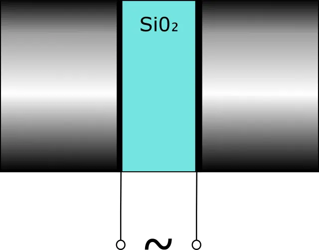
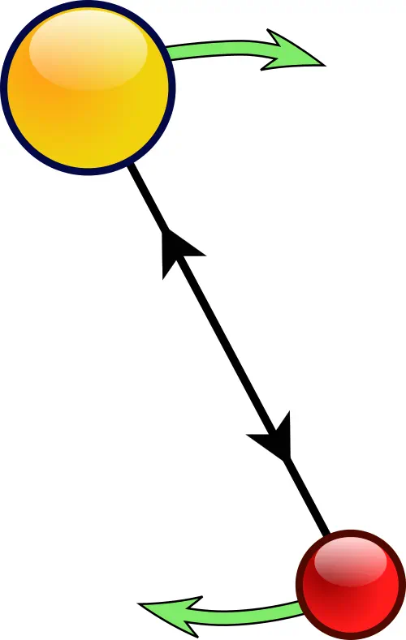
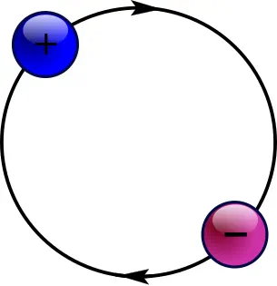
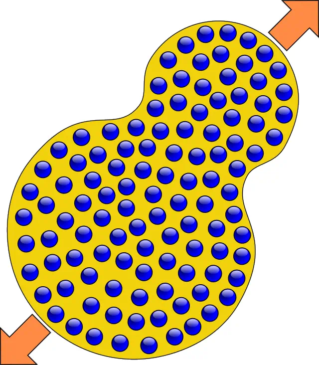
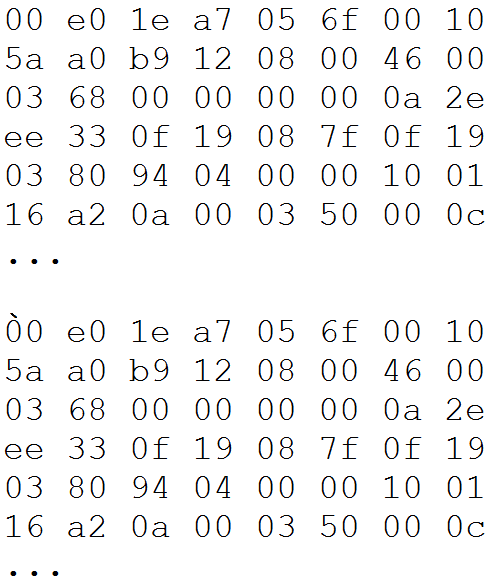

Epigraph:
…April, 1686
Sir Isaac Newton, Warden and Master of the Royal Mint, a Member of the Royal Society, has been given two tons of gravel, to perform gravitation of the field.
Instead of completing this task, Sir Isaac sat under the apple tree and inspired the fall of the so-called "Newton's apple" on his own head. This deplorable incident has resulted in Sir Isaac's science fiction writing under the title "Philosophiæ Naturalis Principia Mathematica", followed by the irresponsible act of submission of this writing to the Royal Society.
The deadline for the Royal Plan of the gravitation of the field has been missed.
I hereby request a hearing on this case and demand Sir Isaac Newton appear in front of the Royal Disciplinary Commission.
Sir Charles Roseblood, Head of the Royal Administration
RF-Gazette, M.I.P.T., Department of General and Applied Physics
Contents:
Introduction
I hope no one missed the most important event of the century which took place this year: on February 8, 2016, it was officially announced that the gravitational wave has been successfully detected on September 14, 2015, accurately matching Einstein's prediction of 1916, yet another brilliant confirmation of the theory of General Relativity. The official information can be found here: http://www.ligo.org/magazine/LIGO-magazine-issue-8.pdf.
Not that any considerable number of people expressed doubts about General Relativity, but the lack of experimental evidence certainly holds the long-awaited applications of the theory. In the present article, we discuss the possibilities and major components related to the most expected application, the Gravitational Internet. The experimental discovery paves the way for this most exciting turn in present-day technology.
First, let's discuss what Gravitational Internet can offer us, and then we can discuss its implementation.
Benefits of Gravitational Telecommunications
First of all, all cable and ratio channels used in the present-day world are already clogged with a high volume of data streams. Modern infrastructure is cluttered with a lot of different cables, and adding new cables becomes increasingly expensive. A lot of telecommunication media uses obsolete technologies with extremely low efficiency, but they cannot be eliminated, because they are tightly bound to the existing infrastructure. The radio bands are, too, extremely badly cluttered with existing channels. Successful transition from obsolete analog TV to newer standard digital television channels in many countries (actually covering most of the surface of the Earth, albeit based on different incompatible standards) clearly demonstrated that obsolete radio bands can be removed from use, but the bandwidth allocation between countries and organizations still becomes increasingly difficult.
In this respect, the gravitational-wave arena presents an empty communication field, which can highly extend the capacity of the world's supply of communication bands which will allow for the implementation of the division of wavebands in a rational manner, taking into account all the numerous mistakes made during the development of electromagnetic communications.
The major benefit specific to gravitational fields is their penetrability. Indeed, in contrast to electromagnetic fields, no media found in the world and nearby space can shield or even reduce the speed of a gravitational wave. There is no such thing as a tin foil hat against gravitation. With gravitational Internet, we will be able to keep our Internet connection no matter where we are: in the subway, under water, or even in the orbital space station. And Google will have unlimited possibilities to spy on us to take into account our preferences regardless of the location of the users.
By the way, speaking of the Google network and collecting customer data:
There is a widespread rumor that the name of this company, "Google", originated from the misspelled word "Googol" (the value of 10100), "which was picked to signify that the search engine was intended to provide large quantities of information". The idea is quite ridiculous, to say the least, taking into account the amount of money spent on big company brands. Not many know that Google secretly targeted key gravitational telecommunication technologies and financed, also secretly, the Advanced LIGO project, so the name "GOOGLE" was designed as the acronym of "Gravitational Observation-Oriented Global Link Environment".
Feasibility
The feasibility of gravitational telecommunications was always considered with a lot of skepticism, but the major reason for that was the lack of definitive experimental results and extremely expensive experimental research, with little prospects for return of investment. Therefore, only the powerful governments were able to provide some financing. Now when we have major groundbreaking results, the situation should quickly change, as such factors as gravitational Internet and the high attractiveness of investment in new Internet technologies come into play.
Another hassle in the development of gravitational telecommunications was the scale of the gravitational phenomena. So far, all the effort was concentrated on low-frequency (of the order of 10 Hz magnitude, actually observed 35-150 Hz) produced by the high-mass motion. It was important to make sure the gravitational waves are really detected and, even more importantly, to present convincing evidence to the public; and concentrating on low-scale high-frequency waves required for telecommunications was perceived as a highly risky investment. At the same time, higher frequency in combination with vibration/rotation of minuscule mass will give us higher energy of a graviton, which makes it easily detectable with the same kind of device, which can be called a "gravitational-wave antenna".
According to the LIGO Magazine report, the source of the detected gravitational wave, a pair of merged black holes, released its energy at a distance of about 1.3 billion light-years from us, or about 0.4∙109 parsecs. For the purpose of gravitational telecommunications on Earth, it would be enough to have a working range of only 1 nanoparsec (about 30.1 km). Therefore, according to the inverse square law for the dilution of energy depending on the distance from the receiver, we need the power of radiation 1.59∙1041 times less than that. It opens quite realistic prospects for miniaturized gravitational antennas utilizing high wave frequencies. High frequency helps to gain graviton energy. At 35-150 Hz, the frequency observed with the help of the Advanced LEGO facility gives the graviton energy from 1.35∙10−13 to 6.2∙10−13 eV, but with the frequency of the nuclear-level oscillator (several 1010 gHz, see the section on this type of antenna) it can be made of the order of some hundreds of keV, with the gain of the order of 1019 times.
So the question is: why, with the gain of 1041 and 1019 times, should we use an exotic source of gravitational waves when we can generate and detect them here on Earth? But another question is: can we create such devices and implement all the necessary features needed for real gravitational communications?
To answer these questions and to make some conclusions on feasibility, we first have to consider the key element of any telecommunication device, the antenna.
Gravitational Antenna: General Considerations
To generate a gravitational wave, we need to shake a considerable mass or rotate a properly configured massive object, such as a dumbbell-shaped one. As nearly all matter on the Earth is concentrated in the atoms' nuclei, only the motion of nuclei or particles including the nuclei can produce a desirable effect. For microscopic particles, a major part of the particles of a mass of material should be involved in synchronized motion. These simple principles define the characteristics of the system considered a candidate for a gravitational antenna prototype.
The first implemented gravitational antenna was based on the quartz oscillator, which is based on the phenomenon of the piezoelectric effect. This kind of antenna can be considered as an antenna on a crystal or chip level, as it can be easily mounted on a circuit board as any electronic component or formed as a part of an electronic chip.
This kind of antenna is implemented as a mechanical oscillator based on a quartz crystal sandwiched between two heavy counter-balances made of heavy metal. Look at the picture below. Doesn't it resemble something?

That's right! This is very similar to the classical Weber's bar. Joseph Weber, despite of his claims, never achieved gravitational wave detection with his detector, but his failure is explained by the wrong choice of scale and the level of technology at the time of his experiments, around 1968.
Another variant of a crystal-level antenna can be based on magnetostriction. This principle resembling piezoelectric operation has one special benefit: ferromagnetic materials used for the oscillators are usually more massive than piezoelectric crystals. Also, the requirements of the crystal structure are easier to meet. At the same time, the major problem of such devices is their low natural frequency, not exceeding several thousand kHz (see http://lab.fs.uni-lj.si/ladisk/data/pdf/javorski_article_transmag.pdf).
The same conclusion can be made on a similar mechanism called piezomagnetism manifested by antiferromagnetic crystals.
It's interesting to note that the size of the body of the chip-level antenna is the biggest among all the possible types of gravitational antenna we are discussing in this article. At the same time, despite the low maximum radiation intensity, the whole communication device appears to be the smallest of all, which should make it an indispensable element of home and small office Gravitational Internet, an analog of a client Wi-Fi unit, which can be mounted directly into a laptop, notebook or a tablet computer. According to our calculation, the effective range of the device can reach up to 0.5 femtoparsec (about 15 m).
However, full-scale gravitational communications require considerably longer ranges of operation. Even the analog of a cellular network would require at least 3 orders of magnitude longer range, about one picoparsec (about 30 km). Let's consider other possible types of antennae and see if we can meet this requirement.
Gravitational Antenna: Molecular Level
Can the gravitational-way effect on a molecular level be considered? Apparently, the simplest molecule structure acts like a miniature gravitational antenna, due to its rotational and vibration degrees of freedom:

The problem with the molecular level is its efficiency. The first problem is the need of using condensed matter, to provide a detectable gravitational response, so the use of gas would not be an option. Only the liquid or solid-state active media can be considered, but with liquid, the real problem would be synchronization of the quantum transition between states, or, in classical analogy, the synchronization of rotational and/or vibration motion and keeping it in phase, which seems to be extremely difficult, due to low coherence times typical for liquid. This problem can be eliminated by using crystalline solid-state media, but it boils down to the device on a crystal, which we already discussed in the section about the chip-level antenna.
Gravitational Antenna: Atomic Level
We would not even mention atomic level as totally unpromising, because all the atom evolutions are based on interactions between baryons (nucleons) and leptons (electrons), later carrying very small mass, about 1/1836 of the nucleon's mass. Therefore, gravitational energy plays a negligible role in the atom's life, and all the possible atomic transformations.
However, this is a characteristic of only the “usual” atoms. There is a remote possibility of using exotic atoms, in, particular, protonium. With protonium, the situation is radically different: two nucleons, baryons of equal mass, are rotating around the common center. They have the same mechanical degrees of freedom as a two-atom molecule and a similar spectrum of quantum transitions:

The major problem, however, is the instability of an exotic atom. Protonium, in particular, decays through annihilation between its components, proton, and antiproton. Certainly, the annihilation of any macroscopic amount of matter filled with protonium atoms will result in a considerable pulse of gravitational waves. The trouble is: only once.
Gravitational Antenna: Nuclear Level
The nuclear level is perhaps the most promising. The nuclei of heavy atoms provide the vibration of big masses, as part of the evolution of the nuclear, bound by the strong interaction. For our purposed, the old classical nuclear liquid drop mode describes this kind of motion with sufficient accuracy. The figure below shows schematically the evolution of a heavy atom nucleus, such as 235U, after the collision with a cold neutron:

Usually, a similar picture is shown to illustrate nuclear fission. However, we are rather interested in the evolution of the nuclei which don't undergo radioactive decay. They keep vibrating, releasing energy in the form of radiating gravitons. The degrees of freedom of the vibrations of the deformed surface of the nucleus form the system of quantum state with typical energy of emitted graviton ranging from tens to hundreds keV, which is equivalent to the classical frequencies of vibration of several 1010 gHz.
To serve as a gravitational antenna, a number of the nuclei in the active media should 1) get energy input other than from colliding elementary particles, 2) synchronized to vibrate in phase, in the whole body of the antenna. Both problems can be solved through nuclear magnetic resonance. This is one of the rare phenomena which causes synchronization of the wave functions of the particle on large scale. The use of this method of synchronization limits the choice of the material for the antenna to the nuclei with non-compensated (non-zero) spin. The first really massive element of this kind is platinum 195Pt, which is already suitable for the device's design, and the cost of this material is not considerable, due to the minuscule size of the active body of the antenna.
Our calculations show that the whole Gravitational Internet connection unit based on a nuclear-level antenna can be packed in an assembly of a size similar to the size of a big desktop computer, or, at worst, a refrigerator. The estimated minimal range of the device is about 5 nanoparsecs, which already exceeds our expectations for the cell Gravitational Network; and the size and energy consumption of the device perfectly suits the format of a gravitational signal repeater. Interestingly, the minimal-size device is relatively easy scales up by an increase in mass, size, and energy consumption, so we can plan for the long-range Active Gravitational Antenna (AGA) device. We will discuss the possibilities offered by such equipment below, in the discussion of the applications.
At this point, we can give a verdict on gravitational antennas: the only two efficient antenna types are 1) piezoelectric chip-level antenna with a low range suitable for miniature devices, home, and small office settings, 2) nuclear-level nuclear-magnetic resonance wide-range antenna scaling from a desktop computer unit and up.
Before we settle with the utilization of antenna types, we need to answer one difficult question: is the use of gravitational waves freely propagating in space the only possibility?
Air or Cable?
It seems obvious that we are only bound to the use of air communications with gravitational signals, but it is not so simple.
With those cables, it was an interesting story about electromagnetic telecommunications. In the electromagnetic domain, everything started with a wired connection, and, after the radio was invented, the radio and wired communication developed in parallel. Not many people remember that, in the past, even the single-wire Earth return transmission was used, that is, the signal was passed by only one single wire, mostly for power supply, but mainstream development (different versions of telegraph, and the telephone) was based on two-wire circuits.
The funny story started when American companies pulled telephone cables with enormously thick copper wires, which became a national standard. They used the principle of that time, "in America everything is big", not too much concerned with the cost of copper. Later on, when they tried to increase frequency to separate two or more channels by frequency bands, it paid off. People noticed that higher-frequency currents concentrated in the skin layer, so a greater wire radius was highly beneficial because the surface of the effective conductive grows as a square of the radius. Later on, it gave us DCL, which helped telecommunication companies to collect good money on ridiculously slow Internet.
However, the middle of the wire remains nearly useless. Nobody paid attention to that for a long time, despite the practice of using coaxial cables created for completely different reasons, for shielding the signal from electromagnetic noise, until Richard Feynman argued that the signal can propagate even if the central wire of the coaxial cable is missing. In his "Feynman's Lectures on Physics", he proved that by pointing out that if you look into the cylindrical pipe, you can see through. (Many mistakenly took this explanation as a joke.) At that time, engineers had some good forgotten habits, such as reading books, not just clicking on a mouse button, and Feynman's lectures were one of the books read everywhere in the world. So, the engineers got excited about this possibility and started to drill holes in the wires, to save some copper. It led to microwave technology and, ultimately, to optical-fiber network cables.
In the gravitational domain, everything goes in a different way. Everything started from gravitational waves freely propagating in space, according to Einstein's General Relativity theory. The apparent problem of using it in technology is exactly the same as in the electromagnetic domain: the power delivered to a unit of volume decreases as a square root of the distance. To deliver a fixed amount of power at an arbitrary distance with lower losses, there are two possibilities: a highly directed beam of energy, as with lasers, or a cable. In electromagnetic technology, laser-based communication through the air, without any cables, was quickly achieved but was never commercialized, remaining in the student/hobby field. In contrast, with the use of gravitational waves, it can become a major or one of the major technologies. The reason is: gravitons, as well as photons, are bosons, more exactly, spin-2 bosons (photon is spin-1), so their stimulated emission is possible.
In sync with the name "LASER" ("light amplification by stimulated emission of radiation"), the corresponding gravitational device can be called "GASER". The problem of its implementation lies in the major benefit of gravitational telecommunication, the penetrability of gravitational waves: it will be hard to organize wave reflection; however, we have a good research reserve in this area.
As to the cables, the situation is much more complicated. Some researchers suggested splicing gravitational cables from superstrings. Interestingly, such splicing should lead to essential quantum entanglement, which is considered, and the major effect to be utilized for quantum computing, in particular, revolutionary cryptography.
Gravitational Internet Protocol
It is fairly obvious that the gravitational Internet will have to co-exist with electromagnetic Internet for some indefinite period of time, and hence has to cooperate with it transparently. The design of the electromagnetic-gravitational gateway seems to be pretty obvious, too. It's also unlikely that all the existing consumer-grade devices will be equipped with gravitational network adapters soon enough. So, the major requirement for the gravitation Internet would be compatibility with electromagnetic Internet at the level of IP packages.
We suggest using the existing IPv6 protocol with an additional gravitational marker, which can be added to the first field of the IP frame format, protocol version, which currently will take one of three possible version values: IPv4 (electromagnetic), electromagnetic IPv6 and gravitational IPv6. The most convenient marker could be the Unicode code point U+0300, "Grave Accent" diacritical mark. This is one of the combined diacritical marks which is used after a character, to add an accent glyph to a character. This suggestion has a number of benefits. First, due to its name, is easy to remember. More important, let's see how the added marked changes the way the IPv6 frame header looks. For example, look at the two hexadecimal dump samples of two IP headers and "find ten differences":

No, there is only one difference: the second sample is marked as gravitational. Note the important thing: the width of the IP headers is exactly the same. It means that the gravitational marker is added at the expense of data redundancy, without modifying the size of the packages.
At the end, let's consider the application of gravitational signals and data transmission other than those traditionally referred to as “Internet“ or “Web”.
Gravitational Global Positional System
The unique penetrability of the gravitational waves makes it a perfect complement to the existing Global Positioning Systems. The receiver, similar to the GPS receiver, can take gravitational readings even from the GSP transmitter even through the body of the Earth.
The new system can be called the “Gravitational Global Positioning System”, GGPS. The introduction of such a system will call for the development of a united international system, breaking through national boundaries.
The type of GGPS transmitter device can be called GOPNIK: "Global Orbiting Positioning Network Interchange Keystation". But do such devices really need to orbit? Due to the gravitational wave penetrability, such a device can be simply mounted on the surface of the Earth, as the close Earth cannot shield or otherwise interfere with its operation. However, the orbiting systems have one essential benefit: they will be less vulnerable to vandalism.
The Benefits of GNFID, a Gravitational Analog of RFID
RFID gradually takes more and more place in modern technology. One of their applications is security, and this is the field where RFID utilization faces serious limitations: the devices can be shielded by simple electromagnetic shielding material. The new technology promises highly increased reliability of inventory and asset management.
The devices based on gravitational antennas are free from this problem; they cannot be shielded. One unsolved problem with such ID devices, which can be called "Gravitational Nuclear Frequency ID", GFNID, is the need for a power source. The possibility of passive GNFID tags is a matter of ongoing research. The problem is reduced to the problem of efficient power harvesting from the GNFID reader, to harvest energy sufficient for powering up both the electric circuits performing basic ID operation and the gravitational antenna. The use of the hybrid electromagnetic-gravitational radiation would make the problem immediately solvable, but it would defeat the purpose of the gravitational approach because electromagnetic shielding would still destroy the operation: if the harvested energy is electromagnetic, shielding the GFNID from radio wave used for powering up the device can render it non-responsive to the gravitational signal. That's why the major direction of the research is the harvesting of pure gravitational radiation.
Conclusion
On this beautiful April day, we all should realize: there is a lot of work ahead of us.